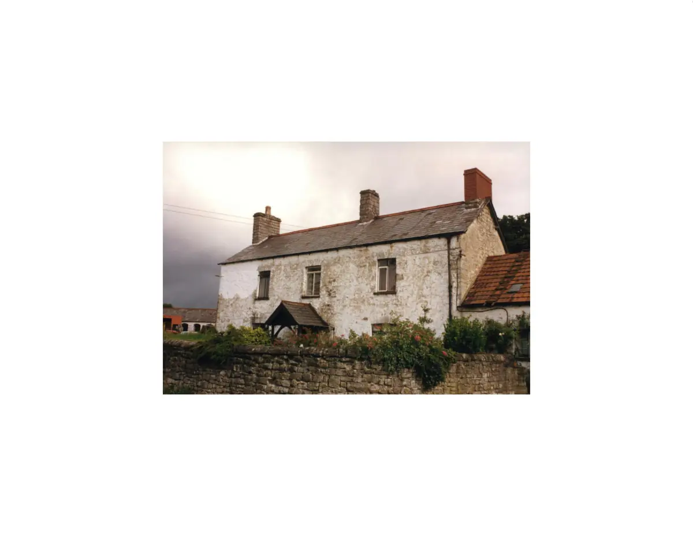

GHF-E106-R37-A2 substantive disclosure
ATISN 27021 doc 1: farmhouse survey photo, 29 July 1988

Transcript
Y77 cADW Ref. No. | pate 24 ELL, 48? a ; = CZ Caer Hise Pret Anse ADDRESS COMMUNITY Leg aon ou DISTRICT/COUNTY Ure 06 GMI ey
Artifact description
Provides two 1988 survey photographs of the farmhouse and barn along with a written response letter.
| Catalogue ID | GHF-E106-R37-A2 |
|---|---|
| What it is | PDF document from Welsh Government / Cadw. Attached to an email received on 11 June 2026, their reference ATISN 27021. 2 pages. |
| From | Welsh Government / Cadw |
| Email received | 11 June 2026 |
| Their reference | ATISN 27021 |
| Pages | 2 |
| File | Doc 1. 1988-07-29 - Great House Farmhouse, Llandough - survey photo.pdf (232 KB) |
| State | Read |
Our integration
Part of the FOI internal review thread with Welsh Government / Cadw opened 17 May 2026. The thread's standing classification is “partial”. Statutory time: met.
Concern to test: whether this reply answers the question as asked, or a narrower one. Not checked against the original request wording here.
What cuts against the case: the body disclosed material, which is the opposite of a refusal; what it disclosed is shown here as sent.
Working-theory relevance · 29 October 2026: The 29 July 1988 farmhouse photograph can corroborate the building's physical condition and layout immediately before demolition. It may help compare a structure or footprint with historical plans, but it cannot establish ownership, authenticate the 1939 signature or prove a land-registration error. Keep the photo's date and provenance distinct from the later archaeological assessment and title records. Theory and test schedule.
Related: GHF-E106-R101-A1 — ATISN 27021 Review Ressponse.pdf · GHF-E106-R37-A1 — ATISN 27021 response letter · GHF-E106-R37-A3 — ATISN 27021 doc 2: barn survey photo, 29 July 1988 · GHF-E106-R95-A1 — GGAT assessment of Great House Farmhouse (filed August 1990) · GHF-E106-R97-A1 — Cadw survey photograph: barn, 29 July 1988 · GHF-E106-R98-A1 — Cadw survey photograph: farmhouse, 29 July 1988 · GHF-E106-R99-A1 — Internal Review Acknowledgement Letter.pdf · The covering email · What They Don’t Say: WTDS-5c5b715a-1, WTDS-5c5b715a-2, WTDS-5c5b715a-3, WTDS-5c5b715a-4 · EV-0489 in the evidence catalogue · Timeline · Disclosure Dartboard